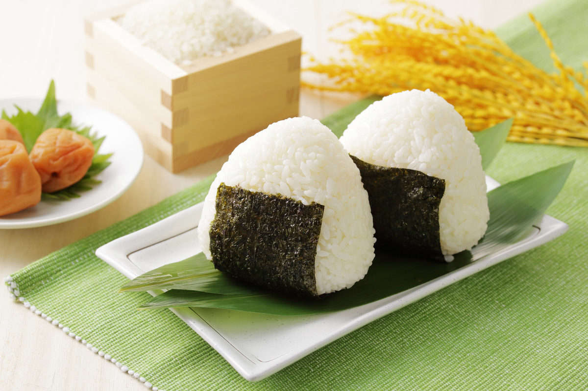

Miso Butter Garlic Shrimp – Umami Meets Indulgence

When Japanese umami meets rich Western comfort, something truly irresistible happens. This Miso Butter Garlic Shrimp combines tender, juicy shrimp with a silky sauce made from white miso, butter, and fragrant garlic.
The result is a bold yet balanced dish that feels both elegant and effortless. Ready in under 20 minutes, it’s perfect for busy weeknights or special dinners when you want something impressive without extra work.
Why This Flavor Combination Works
Miso paste brings deep savory richness with a subtle sweetness, while butter adds smooth texture and indulgent depth. Garlic enhances the aroma and ties everything together beautifully.
The natural sweetness of shrimp pairs perfectly with these bold ingredients, creating a sauce that coats each bite with glossy, umami-packed flavor.
Key Ingredients
- Large shrimp (peeled and deveined)
- White miso paste
- Unsalted butter
- Fresh garlic (minced)
- Soy sauce
- Mirin (optional for light sweetness)
- Black pepper
- Chopped green onions
How to Make It
Heat olive oil and butter in a skillet over medium heat. Add minced garlic and sauté until fragrant. Stir in miso paste, soy sauce, and a splash of mirin, mixing until the sauce becomes smooth.
Add the shrimp and cook for 2–3 minutes per side until pink and opaque. Spoon the sauce over the shrimp as it thickens into a glossy coating.

Serving Suggestions
Serve your miso butter garlic shrimp over steamed jasmine rice, buttery noodles, or alongside sautéed vegetables.
Garnish with chopped green onions and a squeeze of fresh lemon to brighten the flavors and add balance.
Why You’ll Love It
This recipe delivers restaurant-quality flavor with minimal ingredients and simple steps.
Rich, savory, slightly sweet, and incredibly satisfying — it’s the kind of dish that makes ordinary evenings feel special.
A Skillet Full of Comfort
Miso Butter Garlic Shrimp celebrates the harmony between Japanese umami and Western indulgence. It’s bold, comforting, and endlessly versatile.
Whether served casually or plated elegantly, this dish proves that simple ingredients can create unforgettable flavor.